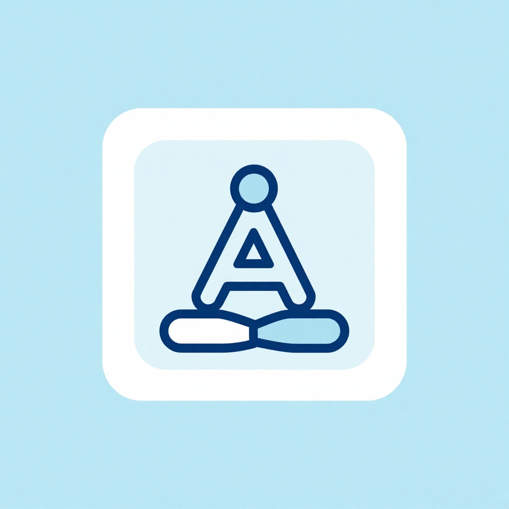

Aquesta formació està dissenyada per a acompanyar al professorat en la incorporació d'eines tecnològiques de suport a l'aprenentatge de llengües en persones adultes. Al llarg del curs s'abordaran diversos aspectes clau que permeten integrar aquestes eines de manera eficaç, responsable i adaptada a les necessitats de l'alumnat.
Començarem explorant els diferents tipus d'intel·ligència artificial i la seua aplicació educativa, amb especial atenció al potencial de la IA generativa. Analitzarem com aquestes eines poden ajustar-se a les motivacions, ritmes i característiques pròpies de l'aprenentatge adult.
A continuació, aprofundirem en els beneficis que ofereixen les tecnologies de suport en l'ensenyament de persones adultes, així com en les seues limitacions i riscos, amb la finalitat de promoure un ús conscient i equilibrat.
Un altre eix fonamental serà la integració ètica de la tecnologia, entesa com l'aplicació responsable de les eines digitals, respectant la privacitat, la seguretat i la inclusió digital. En aquest marc, treballarem el tractament de textos com a eina central de l'aprenentatge: la seua adaptació, transformació i avaluació mitjançant solucions tecnològiques.
El desenvolupament de l'oralitat també ocuparà un espai destacat. Abordarem l'ús d'àudios naturals, la interacció real i els recursos per a la millora fonètica mitjançant tecnologia.
Així mateix, explorarem el paper de la creativitat i els recursos multimèdia en l'ensenyament de llengües per a persones adultes, revisant l'impacte visual, l'ús de vídeos i la integració d'activitats dinàmiques en l'entorn de AULES.
Finalment, com a producte aplicable i transferible, repassarem el disseny d'activitats de recolzament tant a per a l'aula presencial com per a l'aprenentatge autònom.